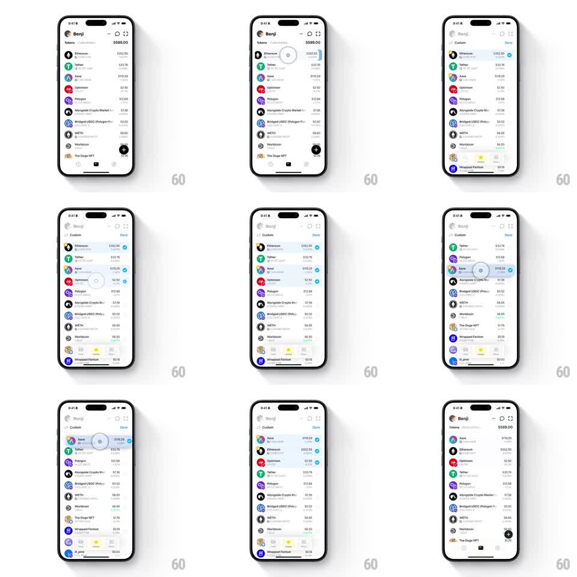

Media
Frame-by-frame

Rebuild this interaction 1:1: Family's token list reordering - entering edit mode on the light Benji token list reveals drag handles, and dragging rows (Aave to the top, Ethereum down) lifts them with a blue highlight while neighbors spring-shift out of the way; Done commits the new order.

Rebuild this interaction 1:1: Family's token list reordering - entering edit mode on the light Benji token list reveals drag handles, and dragging rows (Aave to the top, Ethereum down) lifts them with a blue highlight while neighbors spring-shift out of the way; Done commits the new order. ## Integration Integration: stack-agnostic spec - springs given as stiffness/damping, timed motions as duration + curve; map every value to your framework and animation library of choice. ## Scene Light wallet home: Benji header, "Tokens $589.00", rows (Ethereum $352.95, Tether $33.76, Aave $119.29, Optimism $2.92, Polygon $12.68, Alongside Crypto Market $7.36, Bridged USDC $0.02, WETH $8.85, Worldcoin $6.95, The Doge NFT, Wrapped Fantom $0.18, ai_jane $0.00). Edit mode: "Custom" header with Done, drag handles at each row's right edge, rows slightly compressed. Final order shows Aave first. ## Motion spec Pattern: spring-loaded drag reorder with edit-mode transition. - Enter edit: the header crossfades to "Custom / Done" (200ms), handles slide in from the right (200ms, 20ms row stagger), and rows ease inward (scale 0.98, 200ms). - Touch and hold a row: the row lifts (scale 1.02, shadow grows, 150ms) with a light-blue highlight fill (100ms). - Drag: the row tracks the finger; neighbors it passes shift aside (translateY spring ~300/20, 200ms), opening a gap that follows the dragged row. - Drop: the row snaps into the gap (spring ~320/18, 250ms) with a settle bounce; neighbors close ranks (spring ~300/22). - Tap Done: handles slide out (150ms), the header restores (200ms), rows ease back to full size, and the list stands in the new order. ## Calibration - Only vertical motion - rows never drift horizontally while dragged. - The dragged row renders above siblings (z-raised) with its shadow. ## Reduced motion Reorder animates as fades between old and new positions (200ms). ## Don't miss - The highlight is a light blue fill on the whole row, not just the handle. - Fiat values and logos stay visible on every row during the shuffle.